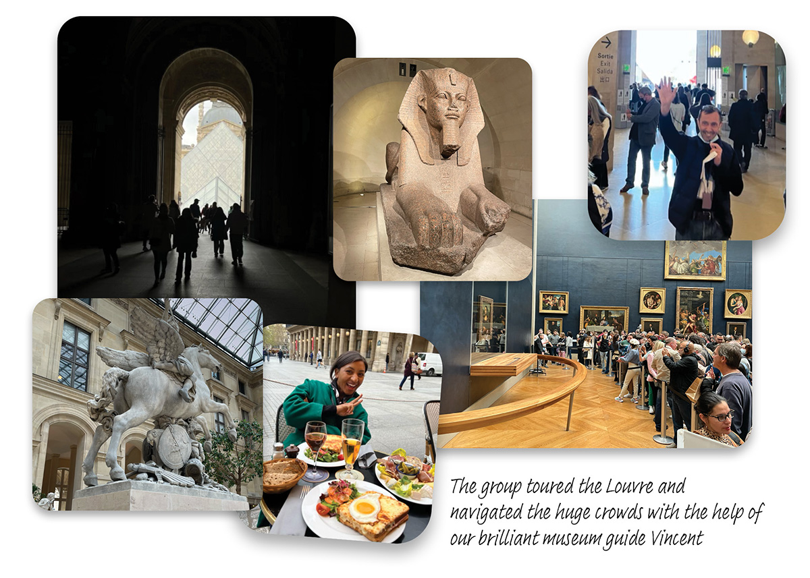
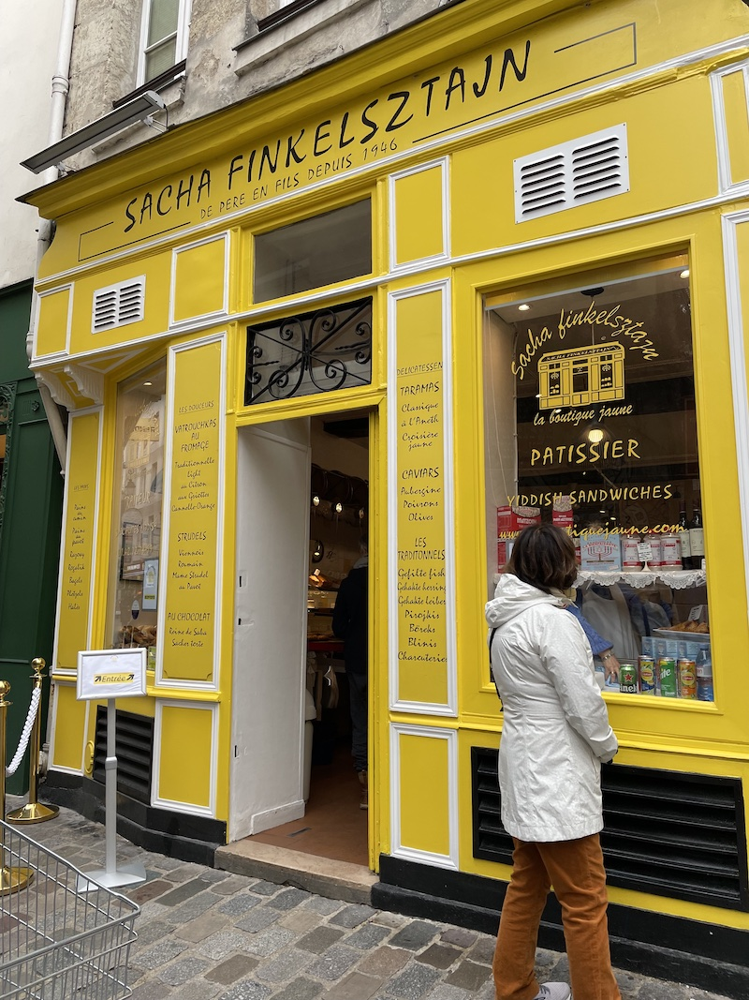
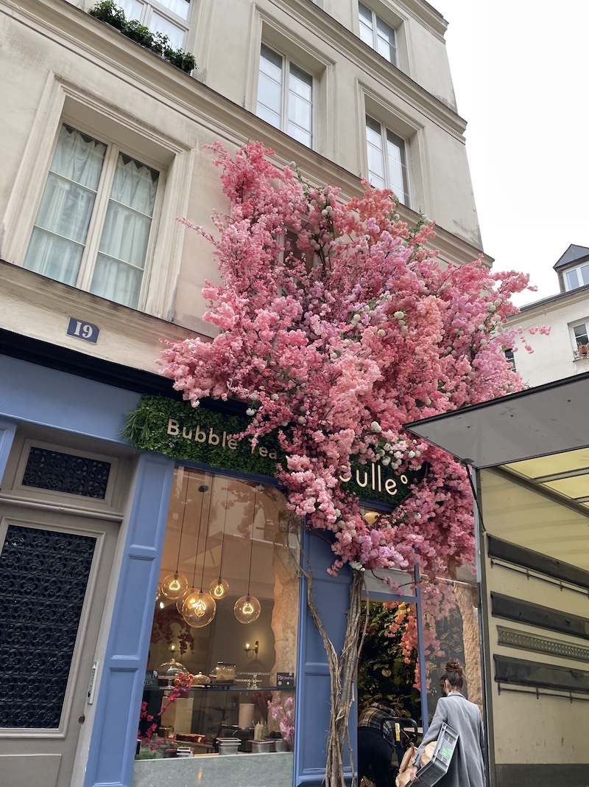
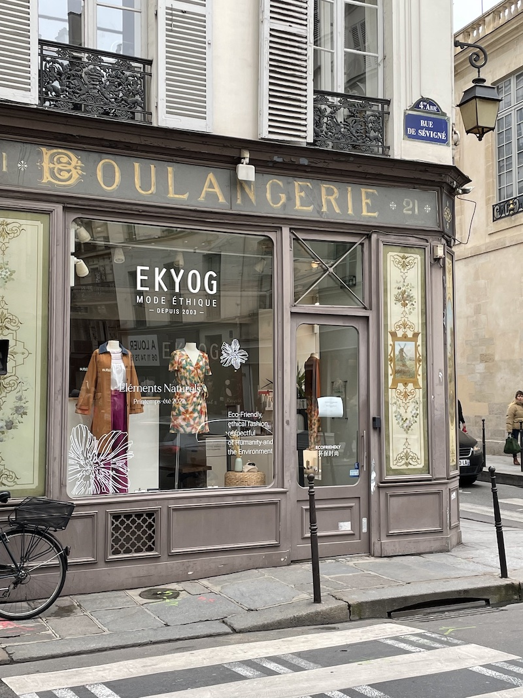
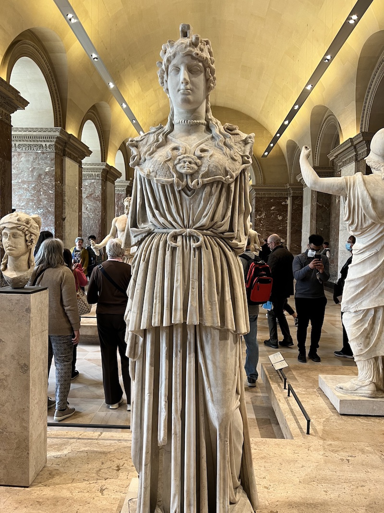
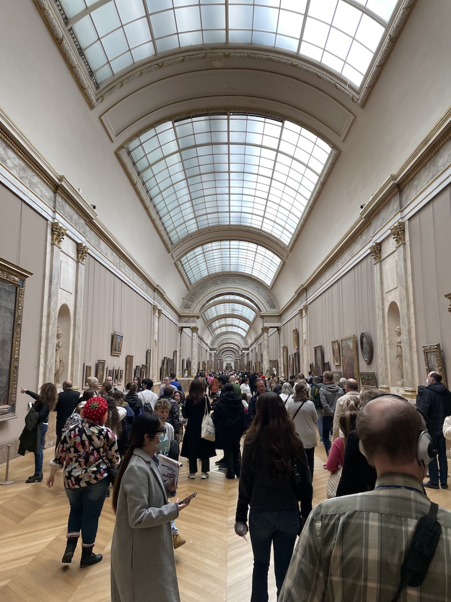
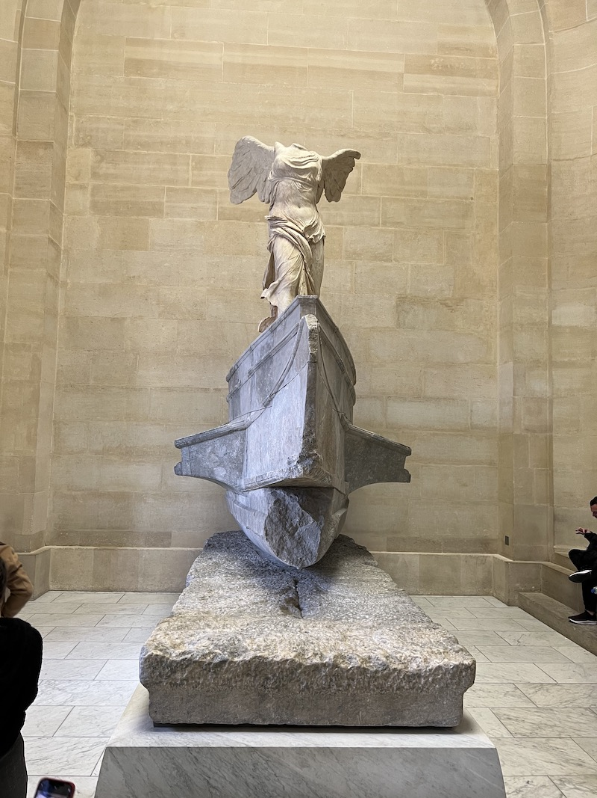

Day 4
Walking Tour of the Marais
Today, Marie took us on a tour of the Marais and the Jewish Quarter. The
neighborhood was bursting with shops and bakeries selling traditional Jewish foods. We
passed a bakery that was celebrating their grand opening and they kindly let the group
sample some of their doughnuts, which were incredibly delicious. Marie shared some history about the
neighborhood. While talking to her, we found out she often visits family members about
twenty minutes from our home in New Jersey - the world is smaller than we thought!



The Louvre!
After the walking tour, we headed to the Louvre and met up with the
group’s museum guide Vincent. The museum was packed to the brim with visitors, but Vincent whisked us through without
any problems. He highlighted some of the collection's most famous and stunning works, including: Michelangelo’s
pair of slaves; the famous painting Liberty Leading the People;
huge wall-size paintings by Delacroix; the sculpture of Cupid and Psyche;
Nike atop a ship’s bough; and of course, the Mona Lisa. After the group tour,
we decided to stay at the museum until it closed, and we viewed many other spectacular works and even
Napoleon III’s apartments.



Dinner and Etiquette
We were exhausted by the end of our tour around the museum and got a sidewalk dinner directly across the street at
Le Nemours, where we learned the value of saying “Bonjour”: We always greeted the host or
shop attendants but we witnessed what happens when you don’t here. A waiter greeted a couple who entered the
restaurant and they ignored him, chatting amongst themselves before demanding a table. Needless to say, they
enjoyed a long wait as other more polite guests were helped immediately.
After a fantastic meal of croque monsieur and a massive charcuterie plate, we returned to hotel and fell asleep as soon as our heads hit the pillow.

{% include next_button.html text="On y va! (\"Let's go!\")" url="day5.html" %}